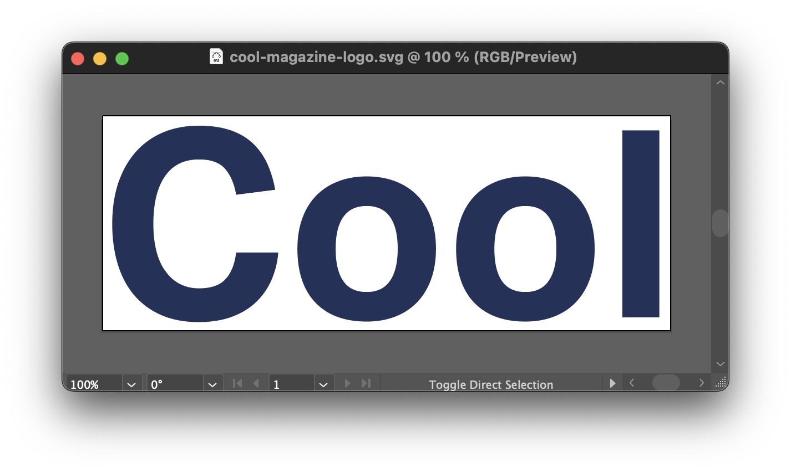
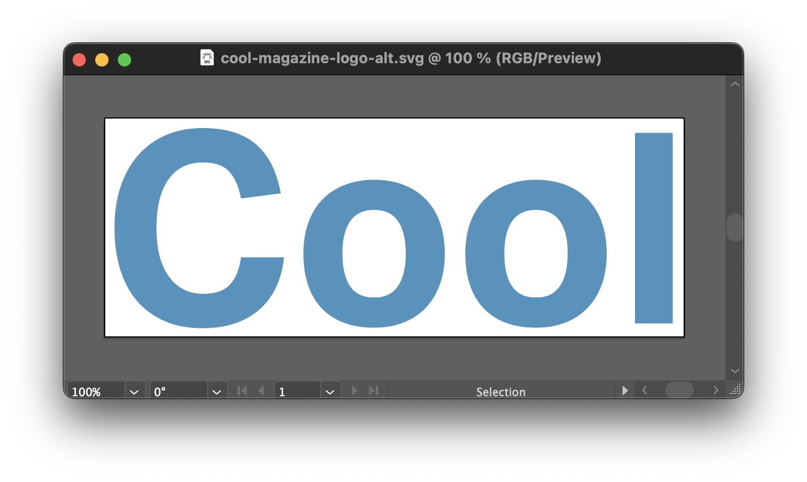

For the alternate color scheme on your website, it is required that you have an alternate logo. (Not all websites will have an alternate logo for alternate color scheme, but you need for this assignment, so you can learn how to do it.)
As it is often the case, there are several ways this can be achieved.
On Illustrator, you’ll open the SVG file and make sure that your artboard is cropped close to your logo. (This was necessary either way.)

Just change the color of the logo and save it with a new name. Leave the background transparent with no color.

Make sure you have your logo as an SVG file, inside the img tag inside the h1 tag:
<h1><a href="index.html"><img src="cool-magazine-logo.svg" alt="Cool Magazine"></a></h1>
Again, this was already required for the previous assignments. You did have your logo as a link to home and inside the heading 1, right? Right?
You want to have your h1 with a specific width in em:
h1 {
width: 10em;
}
And you want your img with a width of 100%:
img {
width: 100%;
}
The declaration blocks above should be outside any media query.
Now comes the part that you’ll change for the alternate color-scheme, therefore, it should go only inside the prefers-color-scheme media query.
First you’ll make the alternate logo the background image of your heading 1:
h1 {
background-image: url("cool-magazine-logo-alt.svg");
background-repeat: no-repeat;
background-size: contain;
}
Since it’s in the background, though, the original logo is going to cover it, which is not what you want. But you can hide the original logo entirely. You’ll make the img element inside the h1 element completely transparent:
h1 img {
opacity: 0;
}
Just remember to keep the above declaration blocks inside the prefers-color-scheme media query.